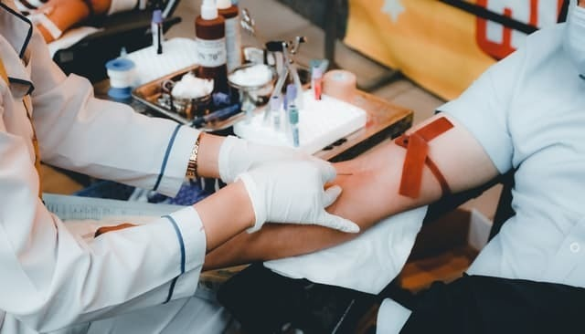
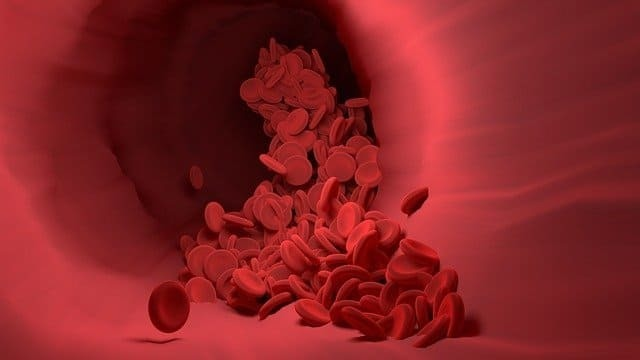

後天性赤芽球癆の鍼灸
骨髄で赤血球のみが作られなくなる指定難病です。基礎疾患の治療や免疫抑制療法など専門医管理を最優先とし、安定期の体調管理を支えます。
まず知っておきたい要点と改善の流れ
後天性赤芽球癆は、骨髄の造血幹細胞から赤血球系のみが作られなくなる指定難病で、中高年に多くみられます。原因不明の「特発性」と、胸腺腫・リンパ系腫瘍・固形腫瘍・ウイルス感染・薬剤・まれに妊娠に伴う「続発性」に分類されます。治療は基礎疾患への対応や原因薬の中止、免疫抑制薬が中心となり、重症例では赤血球輸血と鉄キレート療法が行われます。（公式解説）
このようなお悩みはありませんか？
- ✓強い倦怠感や疲れやすさ、顔色の悪さが続いている
- ✓少しの動きで動悸や息切れが出やすく生活に支障がある
- ✓免疫抑制薬や赤血球輸血・鉄キレート療法を継続している
- ✓治療中の感染予防を心がけながら日常の疲労や緊張を和らげたい
当院の施術アプローチ・改善の流れ
なぜ鍼灸で改善へ向かうのか？（作用機序の図解）
後天性赤芽球癆に対する鍼灸は、心拍変動・血管トーンを整える自律神経サポート機序を通じて、お体本来の回復力を引き出します。

循環器専門医の標準治療を絶対前提とし、手首や背部の安全な経穴へ低刺激でアプローチします。
心臓への過剰な交感神経刺激を穏やかに鎮め、心拍リズムと血管緊張の急変を抑えます。
ストレスで固まりやすい胸郭や横隔膜の緊張を解き、酸素摂取とリラックス反応を促します。
内服管理を厳守しながら、疲労やストレスが引き金となる症状不安の軽減を支えます。
院長YouTube解説・関連動画
続発性赤芽球癆の原因となる疾患

後天性赤芽球癆には原因を特定できない特発性赤芽球癆と基礎的な病気に合わせて起こる続発性赤芽球癆があります。
特発性赤芽球癆の場合は、原因はわかりません。続発性赤芽球癆の場合の原因となる病気には、胸腺腫やリンパ系腫瘍、固形腫瘍、ウイルス感染症などがあります。改善のために使っている薬が原因になることもあります。
非常に珍しいケースでは、妊娠に合わせて赤芽球癆がおこるケースもあります。
後天性赤芽球癆（Secondary Erythrocytosis）は、骨髄に異常が生じ、体内で異常な数の赤血球が生成される病気です。後天性赤芽球癆の原因について説明して行きます。
【赤血球の生成と制御】
まず、赤血球の生成と制御について簡単に説明します。正常な場合、身体は酸素の需要に応じて赤血球を生成します。低酸素状態が続くと、腎臓からエリスロポエチン（EPO）と呼ばれるホルモンが分泌され、骨髄にある幹細胞が刺激されて新しい赤血球が生成されます。一方、酸素濃度が適正範囲に戻ると、EPOの分泌が抑制され、赤血球の生成も制御されます。
【後天性赤芽球癆の主な原因】
後天性赤芽球癆は、異常な数の赤血球が生成されることによって特徴付けられます。以下に、後天性赤芽球癆の主な原因をいくつか紹介します。
酸素供給の低下：酸素供給が不十分な状態が長期間続くと、腎臓が過剰にエリスロポエチンを分泌し、赤血球の過剰生成を引き起こすことがあります。これは、肺の病気、心血管の病気、高山病など、酸素供給に関わる状態によって引き起こされることがあります。
EPOの過剰分泌：EPOの異常な分泌も後天性赤芽球癆の原因となることがあります。腫瘍（特に腎臓や肝臓の腫瘍）や多発性嚢胞腎などの病態により、EPOの過剰な産生が起こります。
遺伝子変異：まれなケースでは、特定の遺伝子の変異が後天性赤芽球癆の原因となることがあります。例えば、特定の酸素感知受容体（HIF2A、VHLなど）に変異があると、EPOの制御が乱れ、赤血球の生成が異常に亢進します。
薬物や物質の影響：一部の薬物や物質は、赤血球の過剰な生成を引き起こす可能性があります。例えば、エリスロポエチン製剤（貧血改善のために投与されることもある）や腎臓移植後に使用される免疫抑制剤（シクロスポリンなど）は、後天性赤芽球癆のリスクを高めることが報告されています。
後天性赤芽球癆の症状は、貧血です。そのため、貧血状態になることによって起こるいろいろな症状が現れます。疲れやすさや倦怠感、動悸や顔面蒼白などです。
病気が原因となる続発性赤芽球癆の場合、病気によって現れる症状もあります。
後天性赤芽球癆（Secondary Erythrocytosis）は、異常な数の赤血球が体内で生成される病気です。後天性赤芽球癆の主な症状について詳しく説明します。
【赤血球の増加と症状】
後天性赤芽球癆では、体内の赤血球の数が異常に増加します。増加した赤血球の数によって、循環系や臓器にさまざまな影響が生じます。以下に、後天性赤芽球癆の主な症状をいくつか紹介します。
多血症症状：赤血球の増加により、血液が過剰になります。このため、顔や頭皮、手足などの皮膚が紅潮し、赤みを帯びることがあります。また、皮膚の発赤とともに、頭痛やめまい、視覚異常、掌のひどいかゆみなどが現れることもあります。
血栓症状：赤血球の増加により、血液がドロドロと粘性が高くなり、血液の循環が悪くなる可能性があります。これにより、血栓が形成されやすくなり、血管を詰まらせることがあります。血栓が脳内にできると、脳梗塞を引き起こす可能性があります。また、血栓が心臓や肺にできると、心筋梗塞や肺塞栓症を引き起こすことがあります。
疲労感と息切れ：赤血球の増加により、血液中の酸素運搬能力が高まります。しかし、増加した赤血球がドロドロの血液を引き起こすことで、酸素の運搬が妨げられる場合があります。その結果、疲労感や息切れが頻繁に起こることがあります。
頭痛やめまい：赤血球の増加により、血液の循環が悪くなることで、酸素供給が不十分になることがあります。このため、頭痛やめまいが起こることがあります。頭痛は特に起床時に強く現れ、体位変化によって悪化することがあります。
顔面の浮腫：赤血球の増加により、血管内の圧力が上昇し、顔面に浮腫みが生じることがあります。特に、目のまわりや頬に浮腫みが現れることがあります。
その他の症状：後天性赤芽球癆では、上記の症状以外にも倦怠感、夜間の多汗、食欲不振、体重減少などの症状が現れることがあります。
後天性赤芽球癆の改善例
後天性赤芽球癆（Secondary Erythrocytosis）は、異常な数の赤血球が体内で生成される病気です。この病態は、多血症症状や血栓症のリスクを伴い、適切な改善が重要とされています。
「田中太郎 52歳の男性の例」
彼は最近、異常な数の赤血球が見つかり、後天性赤芽球癆と判断されました。田中さんは日常生活に支障をきたす症状を抱えており、適切な改善方法が必要でした。
田中さんは、血液専門の医師による詳細な評価を受けました。初めに、彼の赤血球数を正常範囲に戻すために、フレボトミーが開始されました。フレボトミーでは、定期的に一定量の血液を除去し、赤血球数を調整します。田中さんは1か月に1回のフレボトミーを受けることとなりました。
さらに、田中さんの後天性赤芽球癆の原因となる病気が特定されました。彼はCOPDを発症しており、酸素供給の低下が赤血球数の増加に関与していることが判明しました。したがって、田中さんはCOPDの改善に重点を置く必要がありました。
田中さんは、喫煙の中止、酸素補充の導入、気管支拡張薬の使用など、COPDの症状の管理を行うことを勧められました。これにより、酸素供給が改善され、赤血球数の過剰な増加が抑制されることが期待されました。
田中さんの場合、赤血球数の調整のために薬も導入されました。彼は、ヒドロキシ尿素という薬剤の処方を受けました。ヒドロキシ尿素は、赤血球の生成を抑制する効果があります。田中さんは、薬剤の適切な投与量とスケジュールについて医師から指示を受け、継続的に服用することとなりました。
田中さんは改善開始後、多血症症状の軽減と症状の改善を実感しました。フレボトミーによる血液除去とヒドロキシ尿素による薬の組み合わせが、赤血球数の正常化と症状の緩和に寄与しました。
ただし、効果は個人によって異なるため、田中さんの改善法が全ての人に適用されるわけではありません。後天性赤芽球癆の改善方法は個別のケースによって異なり、病歴や詳細な結果に基づいた適切な判断と計画が必要です。

循環器のお悩みのツボ図解とセルフケア
実際の施術ではお一人おひとりの体質・症状に合わせて選穴しますが、循環器領域の補完ケア（高血圧・安定狭心症・心拍変動調整）の臨床でよく用いられる代表的なツボの目安です。

📌 代表的なツボの詳細一覧表を開く（6穴） ▼
| ツボ名 | 位置の目安 | 主な狙い | セルフケアの注意点 |
|---|---|---|---|
| 内関（ないかん） | 手首内側横ジワから肘側へ指3本分、2腱の間 | 動悸・胸部圧迫感の緩和、自律神経調整 | 吐く息に合わせて5秒ほど優しく圧迫 |
| 膻中（だんちゅう） | 左右の乳頭を結ぶ線の中央（胸骨上） | 胸のつかえ・呼吸の浅さ・ストレス性緊張緩和 | 骨直上のため強く押さず温める・軽くさする |
| 神門（しんもん） | 手首内側横ジワの小指側くぼみ | 交感神経の過緊張鎮静、不安感・動悸ケア | 尺骨神経近接のため爪を立てずソフトに |
| 曲池（きょくち） | 肘を曲げた外側のシワ先端 | 血圧変動・上半身ののぼせ・末梢循環サポート | 痛みの出ない心地よい強さで左右交互に |
| 足三里（あしさんり） | 膝外側下のくぼみから指4本分下 | 全身血流・自律神経バランス・疲労回復 | 食直後や入浴直後の強い刺激は避ける |
| 太衝（たいしょう） | 足の甲、親指と人差し指の骨が交わる手前 | ストレス性の血圧上昇・末梢の巡り調整 | 足背動脈拍動部付近のため強く揉みすぎない |
国際査読論文の科学的エビデンス
国際的な医学データベース（PubMed・Cochrane等）で報告されている循環器領域の補完ケア（高血圧・安定狭心症・心拍変動調整）領域の代表的な査読済み鍼灸研究をまとめています（標準治療との併用や研究上の限界を含めて正確に掲載）。
📚 査読論文データ・PubMed出典リンクを開く（4件） ▼
| 年・研究デザイン | 対象・規模 | 主な結果 | 限界・出典 |
|---|---|---|---|
| 2019年 大規模多施設RCT | 慢性安定狭心症 398名解析（標準薬物療法併用） | 16週時点の4週間発作減少は実鍼群がシャム群比5.18回・待機群比5.63回多く有意改善（P<0.001）。 | 標準薬物療法への併用（補完）試験であり単独療法ではない。 JAMA Intern Med (PMID: 31355870) |
| 2007年 シャム対照RCT | 本態性高血圧 140名完了（ドイツ・24時間ABPM） | 治療終了時の24時間血圧はシャム比SBP -6.4mmHg・DBP -3.7mmHg有意低下（P<0.001）。 | 終了3〜6か月で治療前水準へ戻るため継続ケアが必要。 Circulation (PMID: 17548730) |
| 2015年 メタ解析 | 高血圧 23 RCTs（n=1,788） | 降圧薬＋実鍼は降圧薬＋シャム比でSBP -7.47mmHg・DBP -4.22mmHg有意低下。鍼単独は降圧薬と同等・根拠不十分。 | 盲検化・異質性に課題。降圧薬の自己中断は厳禁。 PLoS One (PMID: 26207806) |
| 2025年 メタ解析 | 心拍変動（HRV）10 RCTs（n=744） | 自律神経全体の適応指標SDNNを有意に改善、重篤な有害事象なし。 | LF・HFには不確実性が高くさらなる検証が必要。 Front Neurosci (PMID: 41230507) |
参考文献・出典
- 銀座そうぜん鍼灸院「後天性赤芽球癆の公式解説ページ」
- 2019年 大規模多施設RCT（慢性安定狭心症 398名解析（標準薬物療法併用））— JAMA Intern Med (PMID: 31355870)
- 2007年 シャム対照RCT（本態性高血圧 140名完了（ドイツ・24時間ABPM））— Circulation (PMID: 17548730)
- 2015年 メタ解析（高血圧 23 RCTs（n=1,788））— PLoS One (PMID: 26207806)
- 2025年 メタ解析（心拍変動（HRV）10 RCTs（n=744））— Front Neurosci (PMID: 41230507)
よくある質問（FAQ）
Q. 免疫抑制薬を服用中でも鍼灸を受けられますか？▼
Q. 日常生活で注意すべきポイントはありますか？▼
あわせて読まれる関連疾患（循環器のお悩み）
骨髄の造血幹細胞が減り赤血球・白血球・血小板すべてが減少する指定難病です。専門医治療を最優先とし、安定期・主治医許可下で支えます。
先天的な酵素異常で有害なイソ吉草酸が蓄積する希少な代謝異常症です。専門医での食事管理・早期点滴を最優先とし、安定期の体調を穏やかに支えます。
好酸球の異常増加により全身の細い血管に炎症が生じる指定難病です。専門医の長期治療を最優先とし、寛解・安定期のしびれや緊張を穏やかにケアします。
原因不明の慢性炎症と複数リンパ節の腫脹を特徴とする指定難病です。専門医の薬物治療と感染予防を最優先に、安定期の体調ケアを補完します。
腎臓や肺・神経などの小型血管に炎症が起こる指定難病です。ステロイド・免疫抑制治療を最優先とし、寛解・安定期の体調管理を補完的に支えます。
電子伝達フラビン蛋白の異常で脂肪酸代謝が障害される指定難病です。食事間隔の厳守と専門医管理が最優先で、安定期の筋疲労等を穏やかにケアします。
おひとりで悩まず、まずはご相談ください
銀座本院・川口・大宮・横浜・博多・田無の各院でご予約を承っております。